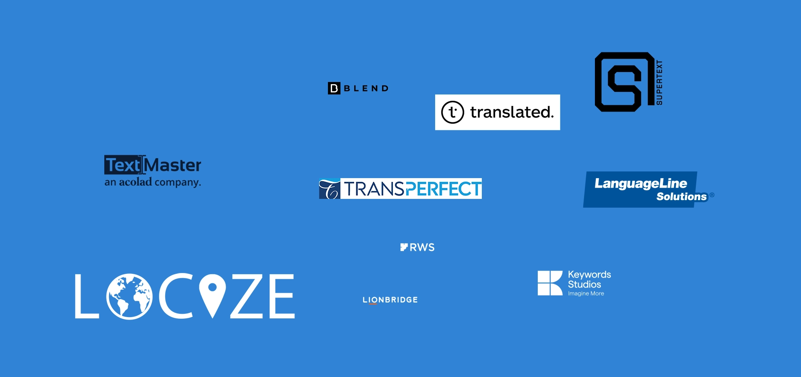
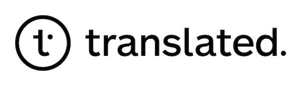
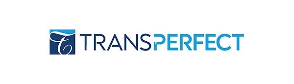

Wie du die beste Übersetzungsagentur findest – und was die meisten dabei übersehen
Eine erfolgreiche Lokalisierung kann die Reichweite Ihres Unternehmens erheblich steigern – es ist nicht ungewöhnlich, durch die Zusammenarbeit mit einem professionellen Übersetzungs- und Lokalisierungsanbieter einen ROI von über 300% zu erzielen.
Obwohl sich Übersetzungsunternehmen heute grosszügig am Markt platziert haben, trennt sich bei genauerem Hinsehen die Spreu vom Weizen. Am Ende ist es daher gar nicht so einfach, eine passende Translation and Localization Company zu finden, die den eigenen Ansprüchen gerecht wird.
Genau darum soll es in diesem Beitrag gehen. Wie findet man professionelle Übersetzungs- und Lokalisierungsanbieter, warum ist das so wichtig und welche gibt es?
Was ist überhaupt eine Translation and Localization Company?
Bei Übersetzungs- und Lokalisierungsanbieter handelt es sich um Dienstleistungsunternehmen, die sich darauf spezialisiert haben, Inhalte von einer Sprache in eine andere zu übersetzen. Dabei geht der Dienst weit über die herkömmlichen Leistungen reiner Übersetzungsbüros hinaus. Die Anbieter stellen gleichzeitig sicher, dass jene Inhalte auch zu den kulturellen, rechtlichen und regionalen Gegebenheiten des Zielmarkts passen.
Während sich reine Übersetzungen also nur auf den sprachlichen Aspekt konzentrieren, garantiert die Lokalisierung, dass Texte und Co. in den jeweiligen kulturellen Kontext gebracht und damit verständlich und relevant werden.
Wie das genau bei einer Translation and Localization Company aussieht? Zum Beispiel passt diese nicht nur die Sprache eines Produkthandbuchs an, sondern berücksichtigt auch landesspezifische Masseinheiten, Datums- und Währungsformate, rechtliche Anforderungen und kulturelle Vorlieben.
Welche Vorteile hat eine Zusammenarbeit mit einer Translation and Localization Company?
Die Zusammenarbeit mit Übersetzungs- und Lokalisierungsanbieter hat gleich mehrere Vorteile. Der wohl wichtigste Punkt ist die professionelle Qualität und Genauigkeit, die die Translation and Localization Company mitbringt. Hier arbeiten qualifizierte Muttersprachler und Fachleute zusammen, um auf jede noch so kleine kulturelle Nuance des Zielmarkts einzugehen. So reduziert sich das Risiko von Missverständnissen, während die Relevanz steigt.
Sofern ein Unternehmen Produkte in anderen Ländern anbietet, ist es auch immer eine Frage der Zeit und des Personalbestands, inwieweit sich um Übersetzungen gekümmert wird. Mit einer Translation and Localization Company an seiner Seite sinkt der eigene Aufwand und Projekte lassen sich pünktlich realisieren.
Dank automatisierter Tools und Ressourcen können etablierte Anbieter selbst umfangreiche Inhalte, etwa ganze Webseiten oder Softwareanwendungen, in kurzer Zeit lokalisieren. Das spart Zeit, insbesondere, wenn eine schnelle Markteinführung in verschiedenen Ländern erforderlich ist.
Weitere Vorteile der Zusammenarbeit mit Übersetzungs- und Lokalisierungsanbieter sind die Skalierbarkeit, die technologische Unterstützung, die Rechtssicherheit und die Kostenersparnis. Letztlich ist es das Ziel, die Kunden am Markt direkt mit passenden Inhalten anzusprechen und die Nutzererfahrungen zu optimieren, um die Wahrscheinlichkeit zu erhöhen, dass das Produkt gekauft oder die Dienstleistung gebucht wird. Mit einer Translation and Localization Company kann jedes international agierende Unternehmen beachtliche Wettbewerbsvorteile erhalten.
Für wen eignet sich eine Translation and Localization Company?
In erster Linie sind sie für Unternehmen und Organisationen gedacht, die international expandieren oder sich auf verschiedenen Märkten etablieren wollen. Branchen wie E-Commerce, Software, Technologie, Marketing, Medizin, Recht und Tourismus sind bei Übersetzungs- und Lokalisierungsanbieter besonders gut aufgehoben, da es hier sehr stark um die Anpassung der Inhalte an unterschiedliche Sprachen und Kulturen geht. Neben Globalplayern eignen sich Übersetzungs- und Lokalisierungsanbieter auch für kleine und mittlere Unternehmen, die in neue Märkte eintreten und ihre internationalen Erfolgschancen maximieren wollen.
Wie finde ich eine gute Translation and Localization Company?
Tatsächlich ist es nicht so einfach, eine hochwertige Translation and Localization Company zu finden. Daher ist man am besten mit einem strategischen Vorgehen bei der Suche beraten.
Wichtig: Werde dir deiner Anforderungen an die Translation and Localization Company bewusst. Dazu helfen gezielte Fragen weiter:
- Welche Sprachen und Regionen müssen abgedeckt werden?
- Welche Art von Inhalten (z. B. Webseiten, Software, Marketingmaterialien) sollen übersetzt und lokalisiert werden?
- Benötigst du branchenspezifische Expertise (z. B. medizinische, technische oder rechtliche Fachkenntnisse)?
- Sind technische Tools wie Translation Memory, maschinelle Übersetzung oder Terminologiedatenbanken für dein Projekt erforderlich?
Je genauer du deine Bedürfnisse kennst, desto leichter fällt es, einen passenden Anbieter zu finden.
Ferner sollte eine Translation and Localization Company bereits einige erfolgreich umgesetzte Projekte nachweisen können. Erfahrung in dieser besonderen Nische ist unerlässlich. Bevorzugt kann das Unternehmen Auszeichnungen und ISO-Zertifizierungen nachweisen. Achte auch darauf, dass entweder erfahrene, qualifizierte Übersetzer oder noch besser professionelle Muttersprachler in der Translation and Localization Company arbeiten. Gleichsam sorgt der Einsatz von modernen Tools wie Translation Memory (TM) oder Machine Translation (MT) für mehr Effizienz, auch bei deinen Projekten.
Ebenso nicht zu vergessen:
- Gute Kommunikation und ein zuverlässiger Kundensupport mit festen Ansprechpartnern
- Transparente Preisgestaltung ohne versteckte Kosten
- Flexibilität, wenn es auch mal um kurzfristige Anfragen geht
- Termintreue und Zuverlässigkeit mit Einhaltung aller Fristen und Deadlines
Einen guten, ersten Eindruck von Übersetzungs- und Lokalisierungsanbieter kann man anhand des Webseitenauftritts, der hier aufgeführten Referenzen und Kundenbewertungen auf unabhängigen Plattformen gewinnen. Idealerweise gibt dir die Translation and Localization Company die Möglichkeit, ein Testprojekt zu starten, bei dem du die Fähigkeiten und den Service genauer prüfen kannst. Am Ende ist es immer das Ziel, mit der Translation and Localization Company eine langfristige Partnerschaft einzugehen, daher nimm dir Zeit bei der Auswahl.
Was macht die Suche nach einem passenden Partner so schwierig?
Nun haben wir des Öfteren erwähnt, dass es nicht ganz so einfach ist, eine professionelle Translation and Localization Company zu finden. Warum aber ist das so? Weil es keine eindeutige Definition gibt und sich im Prinzip jeder, der Übersetzungen, Dolmetschen, Untertitelung und Synchronisation sowie Lokalisierung anbietet, als Translation and Localization Company bezeichnen darf.
Dazu kommt die grosse Anzahl von Anbietern, die von kleinen spezialisierten Agenturen bis zu grossen globalen Dienstleistern reicht. Hier wirst du schnell feststellen, dass die Qualität der Übersetzungen und Lokalisierungen stark variiert. Oftmals scheitert der erste Versuch, eine passende Translation and Localization Company zu finden, daran, dass es augenscheinlich keinen Dienstleiter mit branchenspezifischen Fachkenntnissen zu geben scheint oder die Preisgestaltung schwammig ist. Der letzte Aspekt zeigt sich häufig bei unseriösen Unternehmen.
Ja, die Suche nach einem passenden Partner für die Übersetzung ist mit ein wenig Arbeit verbunden. Aber am Ende lohnt es sich, etwas mehr Zeit zu investieren, um langfristig mit einem professionellen Unternehmen zusammenzuarbeiten.
Die weltweit Top 10 der Translation and Localization Companies
Wusstest du, dass es weltweit rund 18.000 Übersetzungs- und Lokalisierungsanbieter gibt? Um hier den Überblick zu bewahren, haben es sich einige Verbraucherverbände und branchenunabhängige Marktanalyseunternehmen zur Aufgabe gemacht, Übersetzungs- und Lokalisierungsanbieter zu bewerten. Hier haben wir die fünf besten Übersetzungs- und Lokalisierungsanbieter weltweit sowie weitere empfehlenswerte Optionen zusammengestellt.
1. Supertext
- Hochwertige Lokalisierungslösungen, „Swiss made“ seit 2005.
- Preise: $0.16 - $0.24 pro Wort.
- Über 3.000 professionelle Übersetzer und Copywriter, ideal für App-Entwickler und SaaS-Unternehmen.
- Lokale Teams in Zürich, Berlin und Los Angeles begleiten Projekte durch den gesamten Prozess.
2. TextMaster
- SaaS-Übersetzungsservice, geeignet für einfache Webinhalte bis zu komplexen Dokumenten.
- Preise: $0.066 - $0.132 pro Wort.
- Bietet spezialisierte Übersetzungen in Bereichen wie Finanzwesen, Technik und Recht.
3. BLEND
- End-to-End-Lokalisierungslösungen mit Fokus auf kulturelle Feinheiten und Verbraucherverhalten.
- Preise: $0.079 - $0.139 pro Wort.
- Über 25.000 Übersetzer und Sprachspezialisten weltweit.
- BLEND Express als Self-Service-Plattform für persönliche und geschäftliche Projekte.
4. Translated

- Professionelle Sprachlösungen mit einer Kombination aus menschlicher Expertise und KI.
- Preisgestaltung variabel je nach Vertrag.
- Unterstützt über 200 Sprachen und bietet Dienstleistungen für verschiedene Branchen, darunter Recht, Marketing und Technik.
5. TransPerfect

- Globales Unternehmen mit über 5.000 Experten und Büros in mehr als 90 Ländern.
- Unterstützt über 170 Sprachen mit spezialisierten Diensten wie Webseiten und Software-Lokalisierung.
- Nutzung des Translation Management Systems (TMS) und GlobalLink zur Qualitäts- und Effizienzsteigerung.
6. LanguageLine Solutions
- Führend im Gesundheitswesen, deckt über 160 Sprachen ab.
- Bietet spezialisierte Sprachdienstleistungen in digitalen und gedruckten Formaten.
- Erweitert kontinuierlich in neue Branchen wie Gaming- und Medienlokalisierung.
7. RWS
- Über 60 Jahre Erfahrung in der Übersetzungs- und Lokalisierungsbranche.
- Setzt auf modernste Technologien und ein globales Team, besonders stark in Technologie, Pharmazie und Automobilindustrie.
- Über 3.000 Mitarbeiter und 35 Standorte weltweit.
8. Keywords Studios
- Fokussiert auf Gaming- und multimediale Lokalisierung.
- Bietet eine breite Palette an Dienstleistungen: Webseiten-, Software-, und App-Lokalisierung, Content-Erstellung, Voice-over und Untertitelung.
- Unterstützt maschinelle Übersetzung (MT) mithilfe der KantanMT-Plattform.
9. LionBridge Technologies LLC
- Globale Sprachdienstleistungen für Unternehmen und Privatpersonen.
- Services umfassen technisches Schreiben, Multimedia-Lokalisierung und kreative Transkreation.
- Verwendung moderner Übersetzungsmanagementsysteme, basierend auf KI und maschinellem Lernen.
Nachdem du nun weisst, wonach du Translation and Localization Companies bewertest und zehn Top-Anbieter kennengelernt hast, kommst du vielleicht zu dem Schluss, die Übersetzungsarbeiten doch lieber weiterhin selbst in die Hand zu nehmen und dir die aufwendige Suche zu ersparen.
Wir haben eine einfachere Lösung für dich. Wende dich einfach an uns!
Die umfassende Komplettlösung
Wir sind eine moderne Plattform für das Management von Lokalisierungsprojekten mit integriertem Übersetzungsservice, die höchsten Ansprüchen an Professionalität und Zuverlässigkeit gerecht wird. Klingt gut?
➡️ Registriere dich für unser Translation Management System unter Registration.